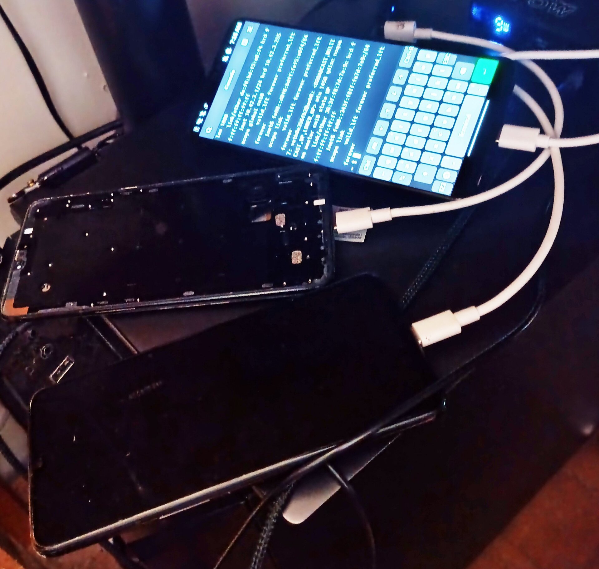
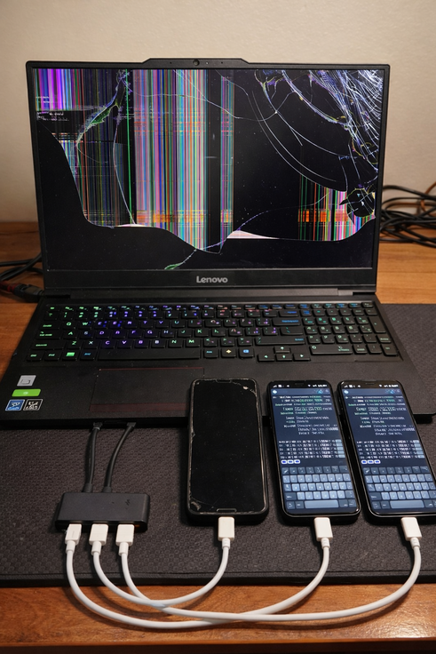
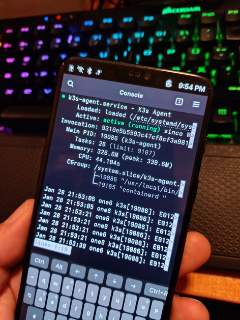
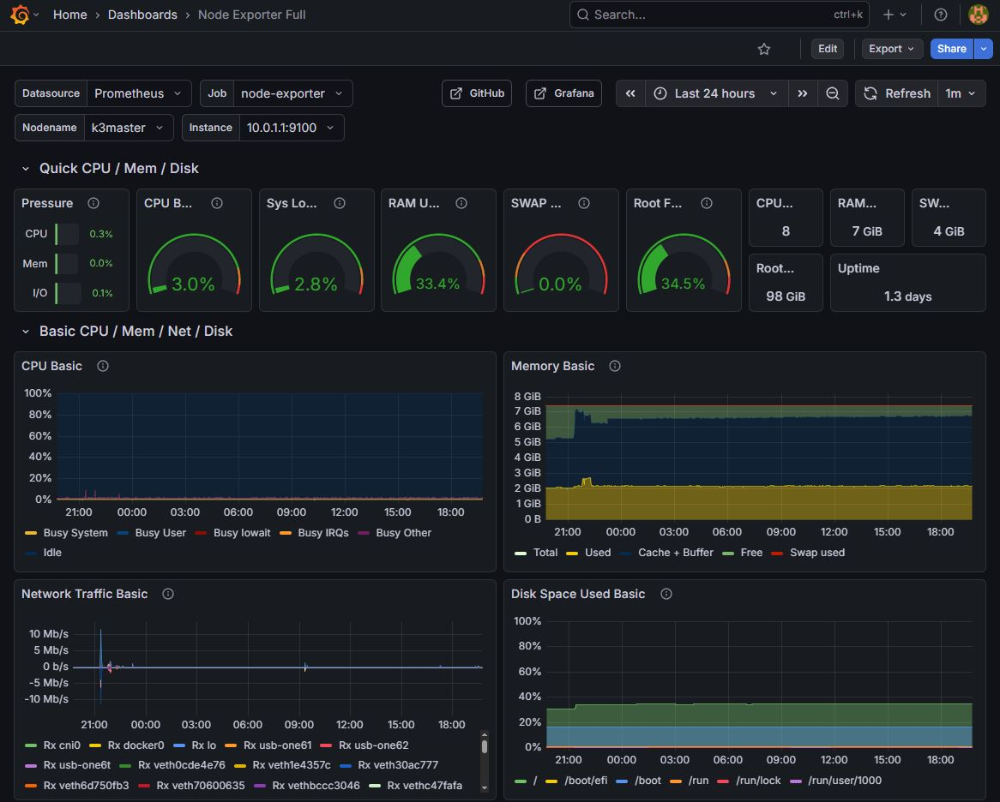

I Built a Kubernetes Cluster from Old Phones and a Laptop
How I turned three OnePlus phones and a Lenovo laptop into a production-grade k3s homelab with USB networking, MetalLB, and Grafana monitoring.
Why Phones?
I had three old, family-owned OnePlus phones gathering dust — flagship powerhouses from 2018, powered by Qualcomm's Snapdragon 845 with 8 cores at 2.8GHz on an ultra-efficient arm64 architecture. Two OnePlus 6 (8GB RAM each) and one OnePlus 6T (6GB RAM). That's 22GB of RAM and 24 ARM cores sitting in a drawer. For the control plane, I used a Lenovo IdeaPad Gaming 3 15IRH10 — 8 cores, 12 threads up to 4.6GHz with 16GB RAM, also retired due to a broken screen. I had enough hardware for a real, silent, power-efficient Kubernetes cluster without spending a dollar. Every device has its own battery, so no UPS is needed — I limited charging to 70% to reduce stress on the cells and eliminate the risk of swelling during always-on operation.
The twist: all node-to-node communication happens over USB cables. No Wi-Fi, no Ethernet switch — just direct USB tethering. One phone even has a broken screen, managed entirely through serial console.
 
Architecture
┌──────────────────────────────────┐
│ k3master (Ubuntu 24.04, 16GB RAM) │
│ Lenovo IdeaPad Gaming 3 15IRH10 │
│ │
Internet ◄────────┤ wan0 192.168.100.52/24 │
│ │
│ usb-one6t ── 10.0.1.1/30 ──► one6t 10.0.1.2 │
│ usb-one62 ── 10.0.2.1/30 ──► one62 10.0.2.2 │
│ usb-one61 ── 10.0.3.1/30 ──► one61 10.0.3.2 │
└──────────────────────────────────┘
one6t: OnePlus 6T, 6GB RAM, aarch64 ✅
one62: OnePlus 6, 8GB RAM, aarch64 🔴 broken screen
one61: OnePlus 6, 8GB RAM, aarch64 ✅
Pod CIDRs: 10.42.{0-3}.0/24 (flannel VXLAN)
Service CIDR: 10.43.0.0/16
MetalLB Pool: 192.168.100.200–192.168.100.220
Each phone connects to the laptop via USB C cable through a powered USB hub — not directly to the laptop's USB port. Phones need around 1A of power and a laptop USB port only provides 0.5A max. A cheap USB powered hub from AliExpress with USB C power delivery does the trick. The laptop acts as router, NAT gateway, and k3s control plane. Phones are worker nodes running container workloads.
Key Design Decisions
Every technical choice here was learned the hard way through debugging. Here's what matters and why.
Routed /30 point-to-point links, not a Linux bridge. My first attempt used a bridge (br0) connecting all USB interfaces. This triggered br_netfilter, which made iptables process bridged packets at both L2 and L3 — causing silent drops that were nearly impossible to diagnose. Dedicated /30 subnets per link eliminated this entirely and mirrors how real data centers connect routers.
Flannel VXLAN, not host-gw. host-gw mode adds static routes with the next-hop set to each node's IP, but it requires all nodes to be on the same L2 broadcast domain. Our separate /30 subnets mean one62 can't directly reach one6t without routing through k3master — flannel can't add the route and fails with "network is unreachable." VXLAN encapsulates pod traffic in UDP, works across any routed network.
Stable interface naming via udev rules. USB C cables
connected to a USB powered hub on postmarketOS generate random MAC
addresses on every boot, so the kernel creates a different
enx... interface name each time. I use udev rules that
match by USB hub port path to assign stable names like
usb-one6t, making netplan, k3s, and NAT rules work reliably
across reboots.
Step 1: Flash postmarketOS on the Phones
1.1 Unlock the Bootloader
- On the phone, go to Settings > About phone and tap Build number seven times to enable Developer Options.
- In Settings > Developer options, enable OEM Unlocking, USB Debugging, and Advanced Restart.
- Reboot to Bootloader: hold power button, tap the three dots on the right, and select Bootloader.
- From your computer:
bash fastboot oem unlock - On the phone, press volume down then power button to confirm. The phone will factory reset — this is expected.
- After reboot, repeat step 1–2 to re-enable Developer Options and USB Debugging.
- Reboot to Bootloader again.
1.2 Flash with pmbootstrap
Install pmbootstrap on your computer and select your device during init:
pip install --user pmbootstrap
pmbootstrap init
Device selection: - OnePlus 6T → oneplus-fajita - OnePlus 6
→ oneplus-enchilada - Kernel: stable v25.12 -
UI: phosh
Build and flash:
pmbootstrap install
sudo fastboot erase dtbo
pmbootstrap flasher flash_rootfs
pmbootstrap flasher flash_kernel
The phone boots into postmarketOS. Connect via USB cable:
ssh user@172.16.42.1
1.3 Configure Phone Networking
Disable wireless radios and set up a static USB network profile.
doas nmcli radio wifi off
doas nmcli radio wwan off
doas rfkill block bluetooth 2>/dev/null
doas nmcli con delete "USB Networking" 2>/dev/null
Create the usb-client profile (adjust IP per phone):
# one6t (10.0.1.2)
doas nmcli con add type ethernet con-name usb-client ifname usb0 \
ipv4.method manual ipv4.addresses 10.0.1.2/30 \
ipv4.gateway 10.0.1.1 ipv4.dns "1.1.1.1,8.8.8.8" \
connection.autoconnect yes
# one62 (10.0.2.2)
doas nmcli con add type ethernet con-name usb-client ifname usb0 \
ipv4.method manual ipv4.addresses 10.0.2.2/30 \
ipv4.gateway 10.0.2.1 ipv4.dns "1.1.1.1,8.8.8.8" \
connection.autoconnect yes
# one61 (10.0.3.2)
doas nmcli con add type ethernet con-name usb-client ifname usb0 \
ipv4.method manual ipv4.addresses 10.0.3.2/30 \
ipv4.gateway 10.0.3.1 ipv4.dns "1.1.1.1,8.8.8.8" \
connection.autoconnect yes
Set hostname and enable the connection:
doas hostnamectl set-hostname one6t # or one62, one61
doas nmcli con up usb-client
1.4 Flush nftables
postmarketOS ships with nftables rules that silently drop forwarded
traffic. The default forward chain has policy drop and only
accepts packets from usb* and wlan* interfaces
— pod traffic from cni0, flannel.1, and
veth* gets dropped. Critically, these rules are invisible
to iptables -L because nftables and iptables-nft maintain
separate rule sets.
echo '#!/usr/sbin/nft -f
flush ruleset' | doas tee /etc/nftables.nft
doas nft flush ruleset
doas rc-update del nftables 2>/dev/null
1.5 Kernel Parameters
echo 'net.ipv4.ip_forward = 1
net.ipv4.conf.all.rp_filter = 0
net.ipv4.conf.default.rp_filter = 0' | doas tee /etc/sysctl.d/90-k3s-network.conf
doas sysctl --system
1.6 Limit Battery Charge Voltage
These phones will be plugged in 24/7. Keeping lithium batteries at 100% charge (4.4V) permanently risks swelling and potential fire. We lower the max charge voltage in the device tree from 4.4V to 3.8V, which corresponds to roughly 70% state of charge — a much safer level for always-on devices.
Install the device tree compiler:
doas apk add dtc
Decompile, patch, and recompile the device tree:
one6t (OnePlus 6T — fajita):
doas cp /boot/sdm845-oneplus-fajita.dtb /boot/sdm845-oneplus-fajita.dtb.bak
doas dtc -I dtb -O dts -o /tmp/fajita.dts /boot/sdm845-oneplus-fajita.dtb 2>/dev/null
doas sed -i 's/voltage-max-design-microvolt = <0x432380>/voltage-max-design-microvolt = <0x39f740>/' /tmp/fajita.dts
doas dtc -I dts -O dtb -o /boot/sdm845-oneplus-fajita.dtb /tmp/fajita.dts 2>/dev/null
one62 / one61 (OnePlus 6 — enchilada):
doas cp /boot/sdm845-oneplus-enchilada.dtb /boot/sdm845-oneplus-enchilada.dtb.bak
doas dtc -I dtb -O dts -o /tmp/enchilada.dts /boot/sdm845-oneplus-enchilada.dtb 2>/dev/null
doas sed -i 's/voltage-max-design-microvolt = <0x432380>/voltage-max-design-microvolt = <0x39f740>/' /tmp/enchilada.dts
doas dtc -I dts -O dtb -o /boot/sdm845-oneplus-enchilada.dtb /tmp/enchilada.dts 2>/dev/null
The voltage values: 0x432380 = 4,399,936 µV (4.4V, 100%) →
0x39f740 = 3,800,000 µV (3.8V, ~70%).
Important: If the battery is currently above 3.8V when you reboot with the new device tree, the charger will simply stop charging until it naturally discharges below the threshold. The phone will continue to run on battery power until it reaches the new setpoint, then resume charging to maintain ~70%. This approach is based on Bry50's PostmarketOS battery voltage limiter.
Verify after reboot:
xxd /sys/firmware/devicetree/base/battery/voltage-max-design-microvolt
# Should show: 0039 f740
cat /sys/class/power_supply/bq27411-0/status
# Should show: "Not charging" (until battery drops below 3.8V)
1.7 Fix USB MAC Address Randomization
postmarketOS randomizes the USB gadget MAC on every boot, which changes the interface name on the laptop side. Fix this by editing the USB gadget setup script on each phone to set a fixed MAC before binding:
doas vi /usr/local/bin/setup-usb-gadget.sh
Add this block after the UDC unbind/detect section, before "Ensure NCM function exists":
For one6t:
# Set fixed MAC addresses for stable interface naming
if [ -d "${FUNCTIONS_DIR}/ncm.usb0" ]; then
echo "16:26:d6:df:e9:bb" > ${FUNCTIONS_DIR}/ncm.usb0/host_addr
echo "16:26:d6:df:e9:bc" > ${FUNCTIONS_DIR}/ncm.usb0/dev_addr
fi
For one62:
if [ -d "${FUNCTIONS_DIR}/ncm.usb0" ]; then
echo "9a:e8:dd:73:77:5d" > ${FUNCTIONS_DIR}/ncm.usb0/host_addr
echo "9a:e8:dd:73:77:5e" > ${FUNCTIONS_DIR}/ncm.usb0/dev_addr
fi
For one61:
if [ -d "${FUNCTIONS_DIR}/ncm.usb0" ]; then
echo "f2:1c:05:01:4e:d5" > ${FUNCTIONS_DIR}/ncm.usb0/host_addr
echo "f2:1c:05:01:4e:d6" > ${FUNCTIONS_DIR}/ncm.usb0/dev_addr
fi
Note: The MAC fix via the gadget script may not take effect if the gadget is pre-initialized by the initramfs. As a more robust alternative, use udev rules on the laptop side (see Step 2.2).
Repeat steps 1.1–1.6 for each phone.
Step 2: Configure the Laptop (k3master)
2.1 Identify USB Interfaces
Plug in phones one at a time to map which interface corresponds to which phone:
ip link show | grep enx
Map serial consoles for emergency access (critical for the broken-screen phone):
for tty in /dev/ttyACM*; do
echo "=== $tty ==="
udevadm info -q property $tty | grep -E 'ID_SERIAL|ID_PATH'
done
Serial access: sudo picocom -b 115200 /dev/ttyACMx (Ctrl+A
then X to exit)
2.2 Stable Interface Naming (udev Rules)
USB gadget MACs can randomize on phone reboot. Use udev rules to rename interfaces by USB hub port, so netplan and k3s configs work regardless of MAC:
sudo tee /etc/udev/rules.d/90-usb-phones.rules << 'EOF'
# Rename USB phone interfaces — match OnePlus serial to exclude WAN dongle
SUBSYSTEM=="net", ACTION=="add", ENV{ID_PATH}=="pci-0000:00:14.0-usb-0:5.2:1.0", ENV{ID_SERIAL}=="OnePlus*", NAME="usb-one6t"
SUBSYSTEM=="net", ACTION=="add", ENV{ID_PATH}=="pci-0000:00:14.0-usb-0:5.3:1.0", ENV{ID_SERIAL}=="OnePlus*", NAME="usb-one62"
SUBSYSTEM=="net", ACTION=="add", ENV{ID_PATH}=="pci-0000:00:14.0-usb-0:5.1:1.0", ENV{ID_SERIAL}=="OnePlus*", NAME="usb-one61"
# WAN dongle — match by MAC for stable naming
SUBSYSTEM=="net", ACTION=="add", ATTR{address}=="c8:4d:44:35:0b:46", NAME="wan0"
EOF
The ENV{ID_SERIAL}=="OnePlus*" filter ensures the WAN USB
Ethernet dongle (which may share the same hub port path on a different
USB bus) doesn't get renamed.
To find your own USB port paths:
for iface in $(ls /sys/class/net/ | grep enx); do
echo "=== $iface ==="
udevadm info -q property /sys/class/net/$iface | grep -E 'ID_PATH=|ID_SERIAL'
done
2.3 Network Configuration (Netplan)
sudo tee /etc/netplan/00-installer-config.yaml << 'EOF'
network:
version: 2
renderer: networkd
ethernets:
wan0:
addresses: [192.168.100.52/24]
routes:
- to: default
via: 192.168.100.1
nameservers:
addresses: [1.1.1.1, 8.8.8.8]
usb-one6t:
addresses: [10.0.1.1/30]
link-local: []
usb-one62:
addresses: [10.0.2.1/30]
link-local: []
usb-one61:
addresses: [10.0.3.1/30]
link-local: []
EOF
sudo rm -f /etc/netplan/50-cloud-init.yaml
sudo netplan apply
2.4 Kernel Parameters
sudo tee /etc/sysctl.d/90-k3s-network.conf << 'EOF'
net.ipv4.ip_forward = 1
net.ipv4.conf.all.rp_filter = 0
net.ipv4.conf.default.rp_filter = 0
EOF
sudo sysctl --system
2.5 Disable firewalld
Ubuntu may ship with firewalld, which runs nftables rules that conflict with k3s iptables chains:
sudo systemctl stop firewalld 2>/dev/null
sudo systemctl disable firewalld 2>/dev/null
sudo apt remove firewalld -y 2>/dev/null
sudo nft flush ruleset
2.6 NAT for Phone Internet Access
Phones have no internet on their own — k3master must NAT their traffic to WAN for container image pulls:
sudo tee /etc/systemd/system/k3s-nat.service << 'EOF'
[Unit]
Description=NAT for k3s phone nodes
After=network-online.target k3s.service
Wants=network-online.target
[Service]
Type=oneshot
RemainAfterExit=yes
ExecStart=/usr/sbin/iptables -t nat -I POSTROUTING 1 -s 10.0.0.0/8 -o wan0 -j MASQUERADE
ExecStart=/usr/sbin/nft flush ruleset
[Install]
WantedBy=multi-user.target
EOF
sudo systemctl enable --now k3s-nat.service
2.7 SSH Config
cat << 'EOF' > ~/.ssh/config
Host one6t
HostName 10.0.1.2
User user
IdentityFile ~/.ssh/id_ed25519
Host one62
HostName 10.0.2.2
User user
IdentityFile ~/.ssh/id_ed25519
Host one61
HostName 10.0.3.2
User user
IdentityFile ~/.ssh/id_ed25519
EOF
2.8 Verify Connectivity
ping -c 1 10.0.1.2 && echo "one6t OK"
ping -c 1 10.0.2.2 && echo "one62 OK"
ping -c 1 10.0.3.2 && echo "one61 OK"
ssh one6t "ping -c 1 1.1.1.1" && echo "NAT OK"
Step 3: Install k3s
3.1 Server (k3master)
sudo mkdir -p /etc/rancher/k3s
sudo tee /etc/rancher/k3s/config.yaml << 'EOF'
node-ip: "10.0.1.1"
node-name: "k3master"
flannel-backend: "vxlan"
flannel-iface: "usb-one6t"
cluster-cidr: "10.42.0.0/16"
service-cidr: "10.43.0.0/16"
disable:
- "servicelb"
write-kubeconfig-mode: "0644"
tls-san:
- "192.168.100.52"
- "k3master"
- "10.0.1.1"
- "10.0.2.1"
- "10.0.3.1"
EOF
curl -sfL https://get.k3s.io | sh -
3.2 Get Join Token
sudo cat /var/lib/rancher/k3s/server/node-token
3.3 Agents (Phones)
Phones don't have internet during initial setup, so copy the installer and arm64 binary from k3master:
curl -sfL https://get.k3s.io -o /tmp/k3s-install.sh
chmod +x /tmp/k3s-install.sh
curl -sfL https://github.com/k3s-io/k3s/releases/latest/download/k3s-arm64 -o /tmp/k3s-arm64
for phone in one6t one62 one61; do
scp /tmp/k3s-install.sh $phone:/tmp/
scp /tmp/k3s-arm64 $phone:/tmp/
done
Install on each phone (example for one6t — adjust node-ip and node-name for others):
ssh -t one6t "doas mkdir -p /etc/rancher/k3s"
ssh -t one6t "echo 'server: \"https://10.0.1.1:6443\"
node-ip: \"10.0.1.2\"
node-name: \"one6t\"
flannel-iface: \"usb0\"' | doas tee /etc/rancher/k3s/config.yaml"
ssh -t one6t "doas cp /tmp/k3s-arm64 /usr/local/bin/k3s && doas chmod +x /usr/local/bin/k3s"
ssh -t one6t "doas sh -c 'INSTALL_K3S_SKIP_DOWNLOAD=true K3S_TOKEN=<TOKEN> K3S_URL=https://10.0.1.1:6443 /tmp/k3s-install.sh'"
Repeat for one62 (node-ip: 10.0.2.2) and one61 (node-ip: 10.0.3.2).
Note: postmarketOS uses
doasinstead ofsudo. Usedoas sh -c 'VAR=val command'to pass environment variables —doasdoesn't support the-Eflag.
3.4 Verify
sudo kubectl get nodes -o wide
All four nodes should show Ready:
NAME STATUS ROLES INTERNAL-IP
k3master Ready control-plane 10.0.1.1
one6t Ready <none> 10.0.1.2
one62 Ready <none> 10.0.2.2
one61 Ready <none> 10.0.3.2
Step 4: Validate Pod Networking
This is the most important validation — cross-node pod communication is where most USB cluster setups fail.
Deploy a test pod on every node:
for node in k3master one6t one62 one61; do
sudo kubectl run nettest-$node --image=alpine:3.20 \
--overrides="{\"spec\":{\"nodeName\":\"$node\"}}" \
-- sleep 3600
done
sudo kubectl get pods -o wide -w
Run the full connectivity matrix:
M=$(sudo kubectl get pod nettest-k3master -o jsonpath='{.status.podIP}')
T=$(sudo kubectl get pod nettest-one6t -o jsonpath='{.status.podIP}')
S=$(sudo kubectl get pod nettest-one62 -o jsonpath='{.status.podIP}')
O=$(sudo kubectl get pod nettest-one61 -o jsonpath='{.status.podIP}')
for src in k3master one6t one62 one61; do
for dst_ip in $M $T $S $O; do
result=$(sudo kubectl exec nettest-$src -- ping -c 1 -W 3 $dst_ip 2>&1 | grep -c "1 packets received")
echo "$src → $dst_ip: $([ $result -eq 1 ] && echo '✅' || echo '❌')"
done
done
All 16 paths (including self) should show ✅.
Test cluster DNS:
sudo kubectl exec nettest-k3master -- nslookup kubernetes.default.svc.cluster.local
Clean up:
sudo kubectl delete pod nettest-k3master nettest-one6t nettest-one62 nettest-one61
Step 5: MetalLB Load Balancer
k3s ships with its own ServiceLB (Klipper) but MetalLB is more capable. We disabled ServiceLB in the k3s config.
Install
sudo kubectl apply -f https://raw.githubusercontent.com/metallb/metallb/v0.14.9/config/manifests/metallb-native.yaml
sudo kubectl -n metallb-system wait --for=condition=ready pod --all --timeout=120s
Configure
Allocate a pool of IPs from your LAN subnet and advertise via L2 (ARP)
on the WAN interface. The nodeSelectors field is critical —
without it, MetalLB's memberlist election may assign IPs to phone
speakers, which don't have a WAN interface and can't respond to ARP:
sudo kubectl apply -f - << 'EOF'
apiVersion: metallb.io/v1beta1
kind: IPAddressPool
metadata:
name: homelab-pool
namespace: metallb-system
spec:
addresses:
- 192.168.100.200-192.168.100.220
---
apiVersion: metallb.io/v1beta1
kind: L2Advertisement
metadata:
name: homelab-l2
namespace: metallb-system
spec:
ipAddressPools:
- homelab-pool
interfaces:
- wan0
nodeSelectors:
- matchLabels:
kubernetes.io/hostname: k3master
EOF
Test
sudo kubectl create deployment nginx-test --image=nginx:alpine --replicas=2
sudo kubectl expose deployment nginx-test --type=LoadBalancer --port=80
sleep 10
sudo kubectl get svc nginx-test
curl http://$(sudo kubectl get svc nginx-test -o jsonpath='{.status.loadBalancer.ingress[0].ip}')
# Clean up
sudo kubectl delete deploy nginx-test
sudo kubectl delete svc nginx-test
Step 6: Monitoring with Prometheus + Grafana
Pin the monitoring stack to k3master to avoid eating phone RAM. Node exporters still run on every node as a DaemonSet.
sudo helm repo add prometheus-community https://prometheus-community.github.io/helm-charts --kubeconfig /etc/rancher/k3s/k3s.yaml
sudo helm repo update --kubeconfig /etc/rancher/k3s/k3s.yaml
sudo kubectl create namespace monitoring
sudo helm install monitoring prometheus-community/kube-prometheus-stack \
--namespace monitoring \
--kubeconfig /etc/rancher/k3s/k3s.yaml \
--set prometheus.prometheusSpec.resources.requests.memory=256Mi \
--set prometheus.prometheusSpec.resources.limits.memory=512Mi \
--set prometheus.prometheusSpec.retention=7d \
--set grafana.resources.requests.memory=128Mi \
--set grafana.resources.limits.memory=256Mi \
--set grafana.adminPassword=homelab \
--set alertmanager.enabled=false \
--set kubeEtcd.enabled=false \
--set kubeControllerManager.enabled=false \
--set kubeScheduler.enabled=false \
--set kubeProxy.enabled=false \
--set nodeExporter.resources.requests.memory=32Mi \
--set nodeExporter.resources.limits.memory=64Mi \
--set prometheus.prometheusSpec.nodeSelector."kubernetes\\.io/hostname"=k3master \
--set grafana.nodeSelector."kubernetes\\.io/hostname"=k3master
Expose Grafana via MetalLB:
sudo kubectl -n monitoring patch svc monitoring-grafana \
-p '{"spec": {"type": "LoadBalancer"}}'
sudo kubectl -n monitoring get svc monitoring-grafana
Access Grafana at http://<EXTERNAL-IP> with
admin / homelab.

What Survives Reboots
| Component | Persistence Method | Location |
|---|---|---|
| k3master network | Netplan | /etc/netplan/00-installer-config.yaml |
| Phone network | NetworkManager | nmcli con (auto-saved) |
| Sysctl (all nodes) | sysctl.d drop-in | /etc/sysctl.d/90-k3s-network.conf |
| NAT + nft flush | systemd oneshot service | /etc/systemd/system/k3s-nat.service |
| nftables disabled (phones) | Service disabled + config | /etc/nftables.nft |
| Interface naming | udev rules | /etc/udev/rules.d/90-usb-phones.rules |
| k3s server | systemd (auto-enabled) | k3s.service |
| k3s agents | systemd (auto-enabled) | k3s-agent.service |
| Battery charge limit | Device tree patch | /boot/sdm845-oneplus-*.dtb |
Troubleshooting
Pods stuck on ContainerCreating: Phones can't pull
images. Check NAT is active on k3master with
sudo iptables -t nat -L POSTROUTING -n -v | grep MASQUERADE. If zero packets matched, re-add the rule. Also verify phones can
resolve DNS: ssh one6t "nslookup docker.io".
Cross-node pod traffic fails: Check nftables on phones
— doas nft list ruleset should return empty. Check nftables
on k3master — if firewalld rules reappeared, flush with
sudo nft flush ruleset. Verify the VXLAN interface exists:
ip link show flannel.1.
Worker can't join cluster: Verify the agent can reach
the API server:
ssh one6t "curl -k https://10.0.1.1:6443/healthz". Check
agent logs: ssh -t one6t "doas journalctl -u k3s-agent -f".
Interface name changed after reboot: The USB gadget MAC
randomized. Verify udev rules are in place and reboot k3master to
re-trigger them. Check with ip link show | grep usb-.
Lost SSH to broken-screen phone: Use serial console.
Identify which ttyACM maps to which phone with
udevadm info -q property /dev/ttyACMx | grep ID_PATH, then
connect with sudo picocom -b 115200 /dev/ttyACMx.
Lessons Learned
-
Never use Linux bridges with k3s. br_netfilter causes packets to be processed by iptables at the bridge layer, creating silent drops between cni0 and physical interfaces that are nearly impossible to debug.
-
postmarketOS nftables is invisible and hostile. The default forward chain drops everything except
usb*andwlan*traffic. Pod interfaces (cni0, flannel.1, veth*) don't match these patterns. The rules don't show up iniptables -L. Always flush nftables on pmOS k3s nodes. -
Flannel host-gw needs L2 adjacency. If your nodes aren't on the same broadcast domain, host-gw silently fails to add routes. Use VXLAN for routed networks.
-
USB gadget MACs randomize on pmOS. This changes the
enx...interface name on the host side every reboot. Use udev rules matching by USB port path for stable naming. -
firewalld on Ubuntu conflicts with k3s. It uses nftables rules that interfere with k3s iptables chains. Remove it.
-
Phones can't pull images without NAT. The /30 links don't provide internet. k3master must MASQUERADE phone traffic to WAN.
-
Copy the k3s binary manually. Phones won't have internet until NAT is configured. Download the arm64 binary on k3master and scp it over.
-
Serial consoles are essential. Especially for phones with broken screens. Map ttyACM devices by USB port path before making network changes.
-
Always verify before proceeding. Test SSH, ping, and internet access at each phase. Never cut over to a new network config until the replacement is confirmed working.
-
doas doesn't support
-E. Pass environment variables inline:doas sh -c 'VAR=value command'. -
MetalLB needs nodeSelectors in mixed clusters. Without
nodeSelectorson the L2Advertisement, MetalLB's memberlist election can assign VIPs to phone nodes that don't have a LAN interface. The phones "win" the election but can't respond to ARP, making services unreachable. Pin advertisements to the node with the WAN interface.